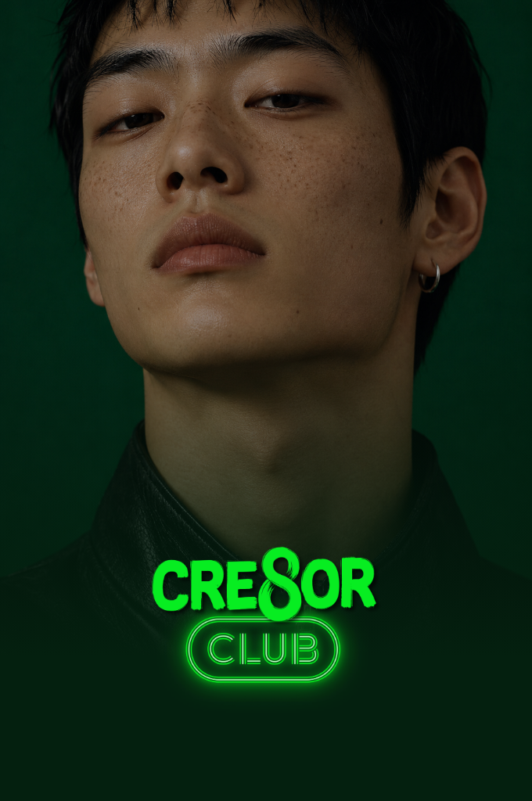

오픈채팅방 v2 — 작품을 보고 연락드린 창작자가 모이는 안내방
11/8 샐리 말대로 방 성격을 바꿨어요. 위클리베스트 방이 아니라 크리에이터클럽이 작품을 보고 연락드린 창작자를 불러 크리에이터클럽 소개, 작품 이용료 받는 법, 궁금한 점을 안내하는 방이에요. 안 올리고 구경만 해도 된다는 말을 첫 공지에 넣었어요.
샐리 말을 이렇게 알아들었어요
받아쓰기가 많이 깨져서 아래처럼 읽었어요. 다르면 이 줄만 고쳐 주세요.
- 시트에서 포트폴리오가 좋은 창작자를 골라 연락하고, 그 연락에 이 방 링크를 붙여 불러요.
- 방에서는 결과(올린 작품)에 따른 이용료 지급, 크리에이터클럽 소개, 추가로 궁금한 점을 안내해요.
- 「포트폴리오를 안 넣고 싶으시면」은 「안 올려도 괜찮아요」로 읽었어요.
시트에서 가져온 것 (11/8 읽기만 함)
- 연락 대상은 「직접 확인」과 「직접 컨택 후보」가 둘 다 O인 행이에요. 지금 24행이에요(직접 컨택 후보 O는 58행, 그중 직접 확인까지 O인 행).
- 연락 목적은 둘이에요. 「작품 구매」는 이미 만든 작품을 앱에 올리는 것이고, 「새 작업 의뢰」는 새로 만든 결과물을 앱에 게시하는 계약이에요.
- 평가 등급은 A 3만 원, B 2만 원, C 1만 원이에요. 이 방에는 등급과 금액표를 올리지 않아요. 11/6 제안서도 작가가 자기 등급을 보게 되는 공개 등급표를 내리자고 했어요.
- 쓰는 법 탭 규칙: 답이 없으면 다시 보내지 않고, 삭제를 요청하면 다시 연락하지 않아요. 주민번호·계좌는 시트에 적지 않아요.
이름
- 추천:
크리에이터클럽 창작자 안내방 - 다른 안:
크리에이터클럽 | 작품 초대
「라운지」는 앱 안 기능 이름과 겹쳐서 뺐어요.
검색 허용
추천은 끄기예요. 연락받은 분만 링크로 들어와요. 처음 보는 사람이 들어와 이용료를 묻기 시작하면 방이 금방 흐려져요.
방 소개
크리에이터클럽이 작업을 보고 연락드린 분들이 모인 방이에요. 작품 이용료 받는 법, 앱 쓰는 법, 궁금한 거 여기서 물어보면 돼요. 연락처·계좌·주민번호는 방에 올리지 말아 주세요.
첫 공지 (방 만든 뒤 고정)
반가워요, 크리에이터클럽 운영진이에요. 크리에이터클럽은 작업이 발견되고, 사람과 연결되는 앱이에요. 포트폴리오를 올리면 다른 창작자가 보고 리스펙트를 남기고, 같이 할 사람도 여기서 찾아요. · 연락드린 이유: 올려 두신 작업을 보고, 그 작품을 크리에이터클럽에서 소개하고 싶어서예요 · 이용료: 작품을 본인 계정으로 직접 올려 주시면 확인하고 작품마다 이용료를 드려요. 금액은 연락드릴 때 따로 말씀드렸어요 · 지급: 올린 걸 확인하면 지급 안내를 따로 드려요. 지급에 필요한 정보도 그때 받아요 · 안 올려도 괜찮아요. 이 방에서 구경만 하셔도 돼요 · 궁금한 건 여기 편하게 남겨 주세요. 운영진이 답해요
자주 나올 질문 (운영진 답 견본, 방에 올리는 글 아님)
- 왜 저한테 연락했어요? → 개인 메시지에서 본 작품 이름을 짚어 답해요. 이 방에서는 「올려 두신 작업을 보고요」까지만 해요.
- 얼마 받아요? → 방에서 답하지 않고 개인 메시지로 답해요. 등급이 다른 사람끼리 금액을 비교하게 되지 않게요.
- 꼭 올려야 해요? → 아니요. 안 올리셔도 돼요.
- 다른 데 올린 작품도 돼요? → 혼자 만든 작품이면 돼요. 팀·회사·방송 작업은 권리를 따로 여쭤봐요(제안서 「첫 석 달은 혼자 만든 작품만」).
- 앱은 어디서 받아요? → 앱스토어·플레이스토어에서 「크리에이터클럽」을 검색해요.
커버


- 이벤트 그림 남자판에서 위클리베스트 문구(「매주 즐거운 혜택」)를 뺐어요. 안내방에 그 문구가 있으면 상금 이벤트 방으로 읽혀요.
- 방장 프로필 정사각은 v1 그대로 써요. 문구가 들어간 이벤트 남자판은 v1에 남겨 뒀어요.
11/9 결정에 따라 고칠 곳
작품이용료 제안서의 결정 다섯이 11/9까지예요. 그중 셋이 이 방 글에 걸려요.
- 지명 연락: KISA 회신을 기다리지 않아요. 11/5 섭외 회의대로 BC 등급부터 수동 DM으로 11/9(월)부터 시작해요. 첫 메시지를 앱에서 숨길지는 11/9 작품이용료 제안서 결정을 따라요. (11/8 레인 정정 — 샐리 11/8 원문·11/5 섭외 회의록·11/6 저녁 브리프)
- 지급 조건에 프로필을 넣을지: 넣으면 첫 공지 이용료 줄에 「프로필도 채워 주시면」을 더해요.
- 이용료 받은 작품의 위클리베스트 상금: 빼기로 하면 자주 나올 질문에 한 줄을 더해요.
확인 못 한 것
- 작품을 나중에 내리면 이용료는 어떻게 되는지 아직 정해진 게 없어서 첫 공지에 넣지 않았어요.
- 오픈채팅 글자 수 제한은 v1에 적은 그대로 확인하지 못했어요.
다음 행동
- 방 이름·검색 허용 정하고 방 열기 — 샐리, 11/9 결정 뒤
- 11/9 결정 나오면 「고칠 곳」 세 줄 반영 — 젠지, 결정 받은 날